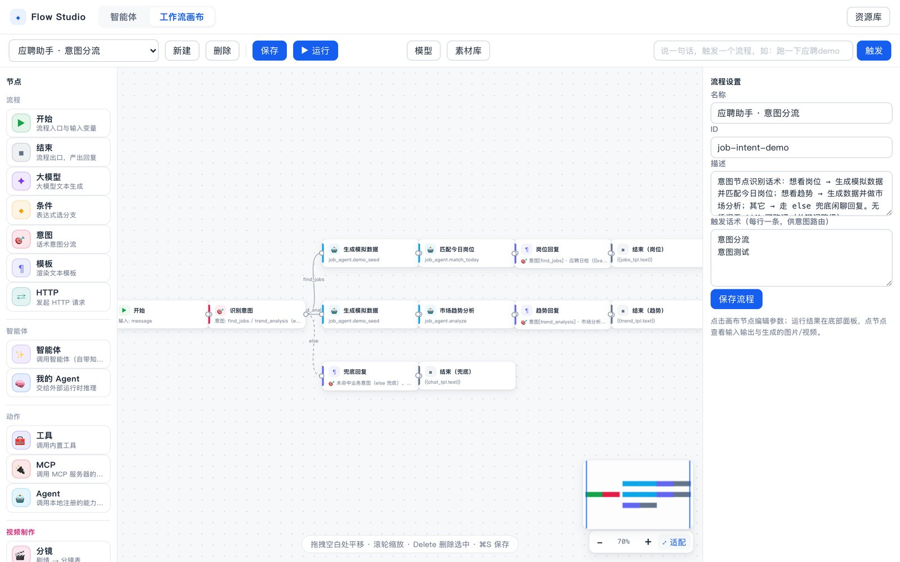
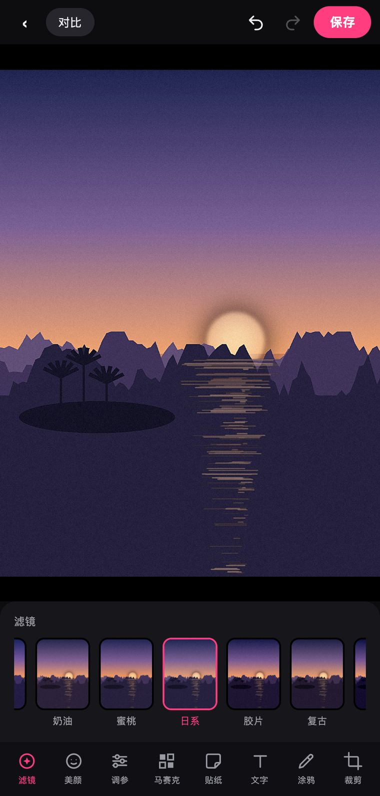
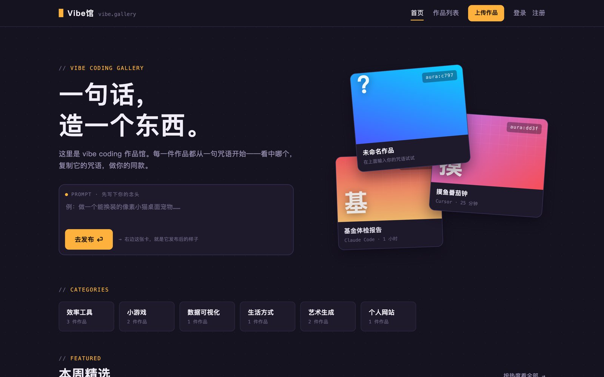
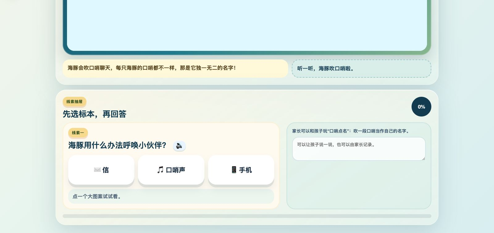

caoqu@local:~$ whoami
把大模型接进真实工作流，再用工程手段让它稳定、可测、可回滚。
顺便让界面看起来不那么像后台系统。
caoqu@local:~$ ls works/
# 点上面任一个项目名，案例直接打进这块屏；不想打字就点下面的建议词。
# 纯静态三件套 · 零依赖 · 零构建 · © 2026 Caoqu
白天我在一家在线旅行平台做客服与工单方向的工程，工作是把 AI 接进真实的业务流程，同时守住它的质量底线；下班后我维护一套自己的 AI 工程小生态——一个编排画布、两个零依赖的小站、一个给 4 岁孩子做的全栈启蒙站，和一个越写越长的知识库。
技术选型偏好很一致：免构建、单机能跑、依赖越少越好。没有 node_modules，就没有供应链风险，也不会有人打开一个页面要等三秒转圈。宁可手写一个着色器，也不想为一个渐变去装两百个包。
模型的天花板一直在涨，
但产品的地板得有人铺。
Python · FastAPI · pytest · WebGL · SQLite · 端到端真实链路验收
数字会过期，命令不会——改数之前先把命令重跑一遍。
在编排引擎之上补齐记忆、技能、知识库、MCP 客户端、评测与可观测，节点类型扩到 21 种；画布仍然是零构建单页，Pointer Events 一套代码同时吃鼠标和触摸。
美图工坊把滤镜、美颜、裁剪、涂鸦、贴纸全塞进浏览器本地跑；Vibe馆 用 Python 标准库撑起一个带审核队列的作品社区，前端一个包都不装。
把 DeepSeek 开源的 Agent Harness 拆开看——插件化的运行时容器、追加式会话事件日志、provider-neutral 的模型层和统一 Tool Runtime，落成一组架构笔记。
小小地球侦探队：不认字也能玩。Canvas 场景分章播放、语音朗读、点大图案答题，答对有庆祝动效；后来又长出一套 three.js 小游戏模式。六套课程、39 个章节。
踩过的坑、验过的链路、读过的源码，全部结构化成带来源与置信度的 Markdown 笔记。从此排查同一个问题不用翻聊天记录——现在 696 篇。
无论是有意思的项目、值得聊的想法，还是一份新机会，都欢迎来找我。代码都在 Gitee 上，想聊具体实现，直接开 issue 也行。
工作里那套客服与工单的 AI 系统不在这里贴图——内部系统，截图和数据都不外传。
四个自己写、自己部署、自己每天在用的项目。截图来自真实运行界面，录屏是当场录的。
拖拽画布编排 Agent 与工作流。意图节点先分流，条件节点做分支，LLM 节点在没有 key 时自动降级成规则而不阻断整条流程——所以图里这条「应聘助手」开箱就能跑完。

/api/agent/chat 即可路由到整条流程$ pytest --collect-only -q223 tests collected in 0.21s
20 种滤镜、美颜、调参、裁剪、马赛克、贴纸、文字、涂鸦，全部在浏览器本地跑完——图片不出这台设备，服务器只负责把这几个文件发给你。

$ grep -c "id: '" js/filters.js21（20 种滤镜 + 原图）
vibe coding 作品社区：输入咒语时右侧实时长出作品卡预览，投稿进审核队列，详情页按图文自动交替排版。后端只用标准库，数据存一个 JSON 文件。

$ wc -l server.py storage.py774 total · 零第三方依赖
给 4 岁孩子做的：不用认字也能玩。看场景动画、点大图案、答对了放庆祝动效；学习线之外还长出一套 three.js 小游戏模式。六套课程从「大海晒太阳」讲到「揭秘地球」。

$ sqlite3 app.db "select count(*) from course_chapters"39 章节 / 6 套已发布课程